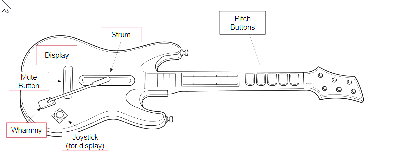

Embedded Systems · Microcontrollers · Audio
Guitar Hero Synthesizer
A repurposed Guitar Hero controller converted into an electronic synthesizer using an ATmega328PB microcontroller, PWM audio, and custom hardware interfaces.

Overview
This project converts a Guitar Hero controller into a low-cost instrument for playing notes, chords, and pitch variations. An ATmega328PB reads the controller inputs, synthesizes notes through PWM, and drives a speaker through a custom audio-output stage. The fret buttons select notes, the strum bar triggers a decaying tone, the whammy stick adds vibrato, and the LCD-and-joystick interface displays and adjusts each button's pitch mapping.
Key Features
- Read the fret buttons, strum bar, mute control, joystick, and whammy input with responsive embedded firmware.
- Generate mapped musical notes using PWM audio and a decay envelope that emulates a guitar strum.
- Convert the whammy stick's analog position through the ADC to add real-time vibrato and pitch variation.
- Use an I2C-connected LCD and joystick interface to display and adjust the pitch assigned to each fret button.
- Integrate regulated battery power, signal buffering, audio amplification, and speaker output inside the original enclosure.
Controller Design Sketch

Links
Full project documentation, requirements validation, development notes, and source code are linked below.
Video Gallery
Live Demo
Demo Day footage of the completed instrument, showing the physical controls, LCD interface, synthesized audio, and speaker output operating together in real time.